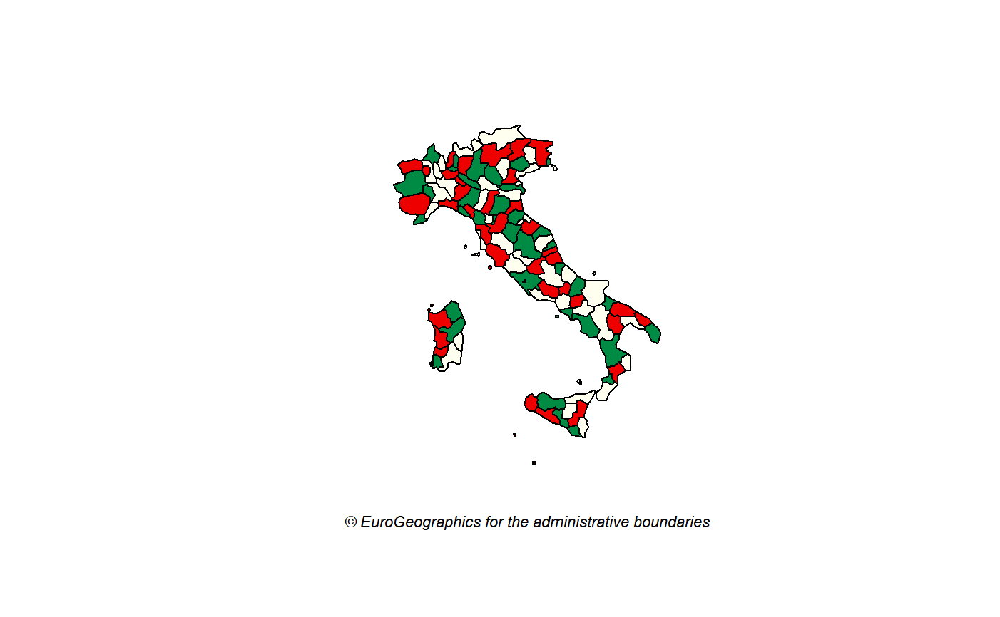

A sf object including all NUTS levels as provided by GISCO (2016 version).
Format
A POLYGON data frame (resolution: 1:20million, EPSG:4326) object with
11 variables:
id: row ID
COAST_TYPE: COAST_TYPE
MOUNT_TYPE: MOUNT_TYPE
NAME_LATN: Name on Latin characters
CNTR_CODE: Eurostat Country code
FID: FID
NUTS_ID: NUTS identifier
NUTS_NAME: NUTS name on local alphabet
LEVL_CODE: NUTS level code (0,1,2,3)
URBN_TYPE: URBN_TYPE
geometry: geometry field
Source
https://gisco-services.ec.europa.eu/distribution/v2/nuts/geojson/
NUTS_RG_20M_2016_4326.geojson file.
See also
Examples
library(sf) nuts <- gisco_nuts italy <- subset(nuts, CNTR_CODE == "IT" & LEVL_CODE == 3) plot(st_geometry(italy), col = c("springgreen4", "ivory", "red2"))